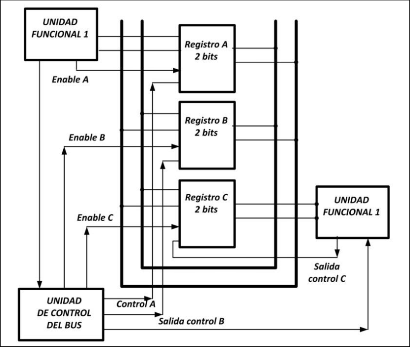

2.2 Estructura de registros
Los registros son pequeñas memorias internas de alta velocidad dentro del procesador, utilizadas para almacenar temporalmente datos e instrucciones. Son fundamentales para el funcionamiento eficiente del CPU, ya que permiten realizar operaciones sin necesidad de acceder constantemente a la memoria principal.
2.2.1 Registros visibles para el usuario
Son aquellos que pueden ser manipulados directamente por el programador a través de instrucciones. Se clasifican en:
- Registros de datos: Almacenan valores numéricos o lógicos temporales utilizados durante las operaciones.
- Registros de direcciones: Guardan direcciones de memoria que apuntan a los datos o instrucciones.
- Registros de propósito general: Utilizados en múltiples tipos de operaciones sin una función específica.
- Registros de propósito específico: Incluyen el contador de programa (PC), el puntero de pila (SP), y el registro de instrucción (IR).
2.2.2 Registros de control y de estados
Estos registros no son accesibles directamente por el usuario, pero son fundamentales para el control del funcionamiento interno del CPU.
- Registro de estado (Flags): Indica resultados de operaciones, como bandera de cero, signo, acarreo, desbordamiento, etc.
- Registro de control: Configura el modo de operación, privilegios, interrupciones habilitadas o deshabilitadas, entre otros.
Las banderas (flags) se usan para tomar decisiones de flujo en el programa, como en instrucciones condicionales o saltos.
2.2.3 Ejemplos de organización de registros de CPU reales
Los diferentes procesadores utilizan estructuras de registros distintas. Algunos ejemplos:
- Intel x86: Registros AX, BX, CX, DX (de 16 bits), EAX, EBX, ECX, EDX (de 32 bits), RAX, RBX... (en x64).
- ARM: Utiliza registros R0 a R15, siendo R13 el puntero de pila (SP), R14 el enlace (LR) y R15 el contador de programa (PC).
- Otros: Algunos microcontroladores usan registros como W (en PIC) o acumuladores especiales.
En las arquitecturas modernas, los registros están organizados para soportar operaciones SIMD, instrucciones vectoriales o flotantes, como los registros XMM en Intel o NEON en ARM.